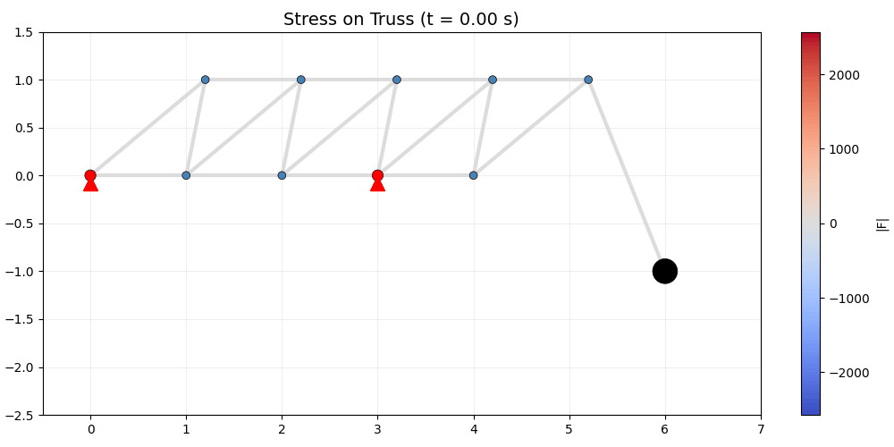

# =============================================================================
# Stress on Truss
# =============================================================================
# Source: https://juliadynamics.github.io/NetworkDynamics.jl/stable/generated/stress_on_truss/
#
# 2D truss structure: point masses connected by stiff springs (beams).
# Demonstrates:
# - Heterogeneous vertices: FreeVertex (4 SVs) + FixedVertex (0 SVs)
# - 2D coupling with insym/outsym
# - Observed function (obsf) for beam force magnitude
# - Per-edge parameters (beam rest lengths L)
# =============================================================================
id: 106
label: "Stress on Truss"
description: >
Time evolution of a 2D truss structure: point masses connected by
stiff springs. Free vertices have position (x, y) and velocity (vx, vy)
as state variables; fixed vertices output their constant position.
Beams exert forces proportional to deviation from rest length.
Recreates the NetworkDynamics.jl Stress on Truss tutorial.
references:
- "https://juliadynamics.github.io/NetworkDynamics.jl/stable/generated/stress_on_truss/"
# -- Default vertex dynamics (FreeVertex) --------------------------------------
local_dynamics:
name: FreeVertex
label: "Free vertex (point mass)"
description: >
Point mass with position (x, y) and velocity (vx, vy).
dx/dt = vx, dy/dt = vy,
dvx/dt = (Fx_sum - γ·vx) / M,
dvy/dt = (Fy_sum - γ·vy) / M - g.
system_type: continuous
autonomous: true
parameters:
M:
label: "Mass"
symbol: "M"
value: 10.0
unit: "kg"
description: "Point mass"
gamma:
label: "Damping"
symbol: "γ"
value: 200.0
unit: "kg/s"
description: "Velocity damping coefficient"
g:
label: "Gravitational acceleration"
symbol: "g"
value: 9.81
unit: "m/s²"
description: "Gravitational acceleration"
coupling_terms:
c_Fx:
description: "Sum of horizontal beam forces"
c_Fy:
description: "Sum of vertical beam forces"
state_variables:
vx:
label: "Horizontal velocity"
symbol: "vx"
equation:
rhs: "(c_Fx - gamma * vx) / M"
initial_value: 0.0
unit: "m/s"
variable_of_interest: true
vy:
label: "Vertical velocity"
symbol: "vy"
equation:
rhs: "(c_Fy - gamma * vy) / M - g"
initial_value: 0.0
unit: "m/s"
variable_of_interest: true
x:
label: "Horizontal position"
symbol: "x"
equation:
rhs: "vx"
initial_value: 0.0
unit: "m"
coupling_variable: true
variable_of_interest: true
y:
label: "Vertical position"
symbol: "y"
equation:
rhs: "vy"
initial_value: 0.0
unit: "m"
coupling_variable: true
variable_of_interest: true
# -- Additional vertex dynamics ------------------------------------------------
dynamics:
FixedVertex:
name: FixedVertex
label: "Fixed vertex (support)"
description: >
Fixed support point. No internal dynamics, outputs constant
position (xfix, yfix) as coupling variables.
Uses NoFeedForward since it ignores edge inputs.
system_type: continuous
autonomous: true
parameters:
xfix:
label: "Fixed x position"
symbol: "xfix"
value: 0.0
unit: "m"
yfix:
label: "Fixed y position"
symbol: "yfix"
value: 0.0
unit: "m"
coupling_terms: {}
state_variables: {}
# -- Network -------------------------------------------------------------------
network:
label: "11-node truss structure"
description: >
2D truss: 5 bottom nodes, 5 top nodes (shifted), 1 hanging mass.
Bottom: (0,0), (1,0), (2,0), (3,0), (4,0).
Top: (1.2,1), (2.2,1), (3.2,1), (4.2,1), (5.2,1).
Hanging: (6,−1). Nodes 1 and 4 are fixed supports.
18 beams connecting adjacent nodes.
number_of_nodes: 11
number_of_regions: 11
nodes:
# Bottom row (nodes 1-5, indices 0-4)
- id: 0
label: "Bottom-left support"
dynamics: FixedVertex
parameters:
- name: xfix
value: 0.0
- name: yfix
value: 0.0
- id: 1
label: "Bottom 2"
initial_state: [0.0, 0.0, 1.0, 0.0]
- id: 2
label: "Bottom 3"
initial_state: [0.0, 0.0, 2.0, 0.0]
- id: 3
label: "Bottom-right support"
dynamics: FixedVertex
parameters:
- name: xfix
value: 3.0
- name: yfix
value: 0.0
- id: 4
label: "Bottom 5"
initial_state: [0.0, 0.0, 4.0, 0.0]
# Top row (nodes 6-10, indices 5-9)
- id: 5
label: "Top 1"
initial_state: [0.0, 0.0, 1.2, 1.0]
- id: 6
label: "Top 2"
initial_state: [0.0, 0.0, 2.2, 1.0]
- id: 7
label: "Top 3"
initial_state: [0.0, 0.0, 3.2, 1.0]
- id: 8
label: "Top 4"
initial_state: [0.0, 0.0, 4.2, 1.0]
- id: 9
label: "Top 5"
initial_state: [0.0, 0.0, 5.2, 1.0]
# Hanging mass (node 11, index 10)
- id: 10
label: "Hanging mass"
initial_state: [0.0, 0.0, 6.0, -1.0]
parameters:
- name: M
value: 200.0
- name: gamma
value: 100.0
edges:
# Vertical beams: bottom i ↔ top i+N (i=1..5)
- source: 0
target: 5
parameters:
- name: L
value: 1.562050
- source: 1
target: 6
parameters:
- name: L
value: 1.562050
- source: 2
target: 7
parameters:
- name: L
value: 1.562050
- source: 3
target: 8
parameters:
- name: L
value: 1.562050
- source: 4
target: 9
parameters:
- name: L
value: 1.562050
# Cross braces: bottom i+1 ↔ top i (i=1..4)
- source: 1
target: 5
parameters:
- name: L
value: 1.019804
- source: 2
target: 6
parameters:
- name: L
value: 1.019804
- source: 3
target: 7
parameters:
- name: L
value: 1.019804
- source: 4
target: 8
parameters:
- name: L
value: 1.019804
# Bottom horizontals: bottom i ↔ bottom i+1 (i=1..4)
- source: 0
target: 1
parameters:
- name: L
value: 1.0
- source: 1
target: 2
parameters:
- name: L
value: 1.0
- source: 2
target: 3
parameters:
- name: L
value: 1.0
- source: 3
target: 4
parameters:
- name: L
value: 1.0
# Top horizontals: top i ↔ top i+1 (i=1..4)
- source: 5
target: 6
parameters:
- name: L
value: 1.0
- source: 6
target: 7
parameters:
- name: L
value: 1.0
- source: 7
target: 8
parameters:
- name: L
value: 1.0
- source: 8
target: 9
parameters:
- name: L
value: 1.0
# Hanging beam: top 5 (index 9) ↔ hanging mass (index 10)
- source: 9
target: 10
parameters:
- name: L
value: 2.154066
coupling:
BeamForce:
name: BeamForce
label: "Stiff spring (beam)"
description: >
Antisymmetric beam force: F = K·(L - d) in the direction
of the beam. d = |pos_dst - pos_src|.
Outputs 2D force vector [Fx, Fy].
Has an observed function for absolute force |F|.
delayed: false
parameters:
K:
label: "Spring stiffness"
value: 0.5e6
unit: "N/m"
description: "Beam stiffness constant"
L:
label: "Rest length"
value: 1.0
unit: "m"
description: "Nominal beam length (set per-edge)"
pre_expression:
rhs: |
dx = v_dst[1] - v_src[1]
dy = v_dst[2] - v_src[2]
d = sqrt(dx^2 + dy^2)
Fabs = K * (L - d)
e_dst[1] = Fabs * dx / d
e_dst[2] = Fabs * dy / d
description: "2D beam force: K·(L - d)·[dx, dy]/d"
outsym:
- Fx
- Fy
observed:
- name: Fabs
label: "Absolute beam force"
description: "Magnitude of beam force: K·(L - d)"
equation:
rhs: |
dx = v_dst[1] - v_src[1]
dy = v_dst[2] - v_src[2]
d = sqrt(dx^2 + dy^2)
obsout[1] = K * (L - d)
# -- Integration ---------------------------------------------------------------
integration:
description: "Explicit Runge-Kutta (Tsit5) with dt=0.01 over t in [0, 12]"
method: Tsit5
step_size: 0.01
duration: 12.0
time_scale: "s"
Stress on Truss
2D truss structure with stiff springs and observed forces
Replicates the NetworkDynamics.jl Stress on Truss tutorial — a 2D truss of point masses connected by stiff beams. Free vertices move under gravity and spring forces; fixed vertices act as supports. Demonstrates heterogeneous vertex types, 2D coupling (insym/outsym), observed functions (obsf), and per-edge parameters.
YAML Specification
Model Report
Stress on Truss
Time evolution of a 2D truss structure: point masses connected by stiff springs. Free vertices have position (x, y) and velocity (vx, vy) as state variables; fixed vertices output their constant position. Beams exert forces proportional to deviation from rest length. Recreates the NetworkDynamics.jl Stress on Truss tutorial.
Point mass with position (x, y) and velocity (vx, vy). The model comprises 4 state variables representing neural population activity.
\[\frac{dvx}{dt} = \frac{c_{Fx} - \gamma \cdot vx}{M}\]
\[\frac{dvy}{dt} = - g + \frac{c_{Fy} - \gamma \cdot vy}{M}\]
\[\frac{dx}{dt} = vx\]
\[\frac{dy}{dt} = vy\]
| Parameter | Value | Unit | Description |
|---|---|---|---|
| \(M\) | 10.0 | kg | Point mass |
| \(\gamma\) | 200.0 | kg/s | Velocity damping coefficient |
| \(g\) | 9.81 | m/s² | Gravitational acceleration |
Pre-synaptic transformation: \[c_{\text{pre}} = x_{j}\]
Post-synaptic transformation: \[c_{\text{post}} = b + a \cdot gx\]
| Parameter | Value | Description |
|---|---|---|
| \(a\) | 0.00390625 | Linear scaling factor of the coupled (delayed) input. |
| \(b\) | 0.0 | Shifts the base of the connection strength while maintaining the absolute difference between different values. |
Regions: 11
Conduction velocity: 3.0 mm/ms
Method: Tsit5
Time step: \(\Delta t = 0.01\) ms
Duration: 12.0 ms
Generated Julia Code
Code(exp.render_code("networkdynamics"), language='julia')using Graphs
using NetworkDynamics
using OrdinaryDiffEqTsit5
function FreeVertex_f!(dx, _x, esum, (M, gamma, g,), t)
vx, vy, x, y = _x
c_Fx = esum[1]
c_Fy = esum[2]
dx[1] = (c_Fx - gamma .* vx) ./ M
dx[2] = -g + (c_Fy - gamma .* vy) ./ M
dx[3] = vx
dx[4] = vy
nothing
end
vertex_FreeVertex = VertexModel(;
f = FreeVertex_f!,
g = StateMask(3:4),
sym = [:vx, :vy, :x, :y],
psym = [:M => 10.0, :gamma => 200.0, :g => 9.81],
insym = [:Fx, :Fy],
name = :FreeVertex,
)
function FixedVertex_g!(out, x, p, t)
out .= p
nothing
end
vertex_FixedVertex = VertexModel(;
g = FixedVertex_g!,
outsym = [:x, :y],
psym = [:xfix, :yfix],
ff = NoFeedForward(),
name = :FixedVertex,
)
function BeamForce_edge_g!(e_dst, v_src, v_dst, (K, L,), t)
dx = v_dst[1] - v_src[1]
dy = v_dst[2] - v_src[2]
d = sqrt(dx^2 + dy^2)
Fabs = K * (L - d)
e_dst[1] = Fabs * dx / d
e_dst[2] = Fabs * dy / d
nothing
end
function BeamForce_obsf!(obsout, u, v_src, v_dst, (K, L,), t)
dx = v_dst[1] - v_src[1]
dy = v_dst[2] - v_src[2]
d = sqrt(dx^2 + dy^2)
obsout[1] = K * (L - d)
nothing
end
edge_BeamForce = EdgeModel(;
g = AntiSymmetric(BeamForce_edge_g!),
outsym = [:Fx, :Fy],
psym = [:K => 500000.0, :L => 1.0],
obsf = BeamForce_obsf!,
obssym = [:Fabs],
name = :BeamForce,
)
g = SimpleGraph(11)
add_edge!(g, 1, 6)
add_edge!(g, 2, 7)
add_edge!(g, 3, 8)
add_edge!(g, 4, 9)
add_edge!(g, 5, 10)
add_edge!(g, 2, 6)
add_edge!(g, 3, 7)
add_edge!(g, 4, 8)
add_edge!(g, 5, 9)
add_edge!(g, 1, 2)
add_edge!(g, 2, 3)
add_edge!(g, 3, 4)
add_edge!(g, 4, 5)
add_edge!(g, 6, 7)
add_edge!(g, 7, 8)
add_edge!(g, 8, 9)
add_edge!(g, 9, 10)
add_edge!(g, 10, 11)
vertex_array = VertexModel[vertex_FreeVertex for _ in 1:11]
vertex_array[1] = vertex_FixedVertex
vertex_array[4] = vertex_FixedVertex
nw = Network(g, vertex_array, edge_BeamForce; dealias=true)
s = NWState(nw)
s.p.v[1, :xfix] = 0.0
s.p.v[1, :yfix] = 0.0
s.v[2, :vx] = 0.0
s.v[2, :vy] = 0.0
s.v[2, :x] = 1.0
s.v[2, :y] = 0.0
s.v[3, :vx] = 0.0
s.v[3, :vy] = 0.0
s.v[3, :x] = 2.0
s.v[3, :y] = 0.0
s.p.v[4, :xfix] = 3.0
s.p.v[4, :yfix] = 0.0
s.v[5, :vx] = 0.0
s.v[5, :vy] = 0.0
s.v[5, :x] = 4.0
s.v[5, :y] = 0.0
s.v[6, :vx] = 0.0
s.v[6, :vy] = 0.0
s.v[6, :x] = 1.2
s.v[6, :y] = 1.0
s.v[7, :vx] = 0.0
s.v[7, :vy] = 0.0
s.v[7, :x] = 2.2
s.v[7, :y] = 1.0
s.v[8, :vx] = 0.0
s.v[8, :vy] = 0.0
s.v[8, :x] = 3.2
s.v[8, :y] = 1.0
s.v[9, :vx] = 0.0
s.v[9, :vy] = 0.0
s.v[9, :x] = 4.2
s.v[9, :y] = 1.0
s.v[10, :vx] = 0.0
s.v[10, :vy] = 0.0
s.v[10, :x] = 5.2
s.v[10, :y] = 1.0
s.v[11, :vx] = 0.0
s.v[11, :vy] = 0.0
s.v[11, :x] = 6.0
s.v[11, :y] = -1.0
s.p.v[11, :M] = 200.0
s.p.v[11, :gamma] = 100.0
s.p.e[1, :L] = 1.0
s.p.e[2, :L] = 1.56205
s.p.e[3, :L] = 1.0
s.p.e[4, :L] = 1.019804
s.p.e[5, :L] = 1.56205
s.p.e[6, :L] = 1.0
s.p.e[7, :L] = 1.019804
s.p.e[8, :L] = 1.56205
s.p.e[9, :L] = 1.0
s.p.e[10, :L] = 1.019804
s.p.e[11, :L] = 1.56205
s.p.e[12, :L] = 1.019804
s.p.e[13, :L] = 1.56205
s.p.e[14, :L] = 1.0
s.p.e[15, :L] = 1.0
s.p.e[16, :L] = 1.0
s.p.e[17, :L] = 1.0
s.p.e[18, :L] = 2.154066
tspan = (0.0, 12.0)
prob = ODEProblem(nw, uflat(s), tspan, pflat(s))
sol = solve(prob, Tsit5(); saveat=0.01)
adj_matrix = Float64.(adjacency_matrix(g))
using Random: MersenneTwister
function spring_layout(g; seed=42, iterations=50, k=1.0)
rng = MersenneTwister(seed)
n = nv(g)
pos = randn(rng, n, 2)
for _ in 1:iterations
disp = zeros(n, 2)
for i in 1:n, j in (i+1):n
d = pos[i, :] - pos[j, :]
dist = max(norm(d), 0.01)
rep = k^2 / dist
disp[i, :] .+= d / dist * rep
disp[j, :] .-= d / dist * rep
end
for e in edges(g)
i, j = src(e), dst(e)
d = pos[j, :] - pos[i, :]
dist = max(norm(d), 0.01)
att = dist^2 / k
disp[i, :] .+= d / dist * att
disp[j, :] .-= d / dist * att
end
for i in 1:n
dl = max(norm(disp[i, :]), 0.01)
pos[i, :] .+= disp[i, :] / dl * min(dl, 0.1)
end
end
return pos
end
using LinearAlgebra: norm
node_positions = spring_layout(g)
using Plots
plot(sol; ylabel="state", xlabel="time", title="FreeVertex on 11-node network")
Run & Animate
ts = exp.run(format="networkdynamics")WARNING: Imported binding MainInclude.eval was undeclared at import time during import to Main.
WARNING: import of MainInclude.eval into Main conflicts with an existing identifier; ignored.
WARNING: Imported binding MainInclude.include was undeclared at import time during import to Main.
WARNING: import of MainInclude.include into Main conflicts with an existing identifier; ignored.
WARNING: Imported binding MainInclude.eval was undeclared at import time during import to Main.
WARNING: import of MainInclude.eval into Main conflicts with an existing identifier; ignored.
WARNING: Imported binding MainInclude.include was undeclared at import time during import to Main.
WARNING: import of MainInclude.include into Main conflicts with an existing identifier; ignored.import numpy as np
import matplotlib.pyplot as plt
from matplotlib.animation import FuncAnimation
from matplotlib.collections import LineCollection
from IPython.display import HTML
# All spatial data is extracted automatically from the YAML metadata
x_all = ts.node_positions[:, :, 0] # (n_t, n_nodes)
y_all = ts.node_positions[:, :, 1] # (n_t, n_nodes)
n_t = len(ts.time)
n_nodes = x_all.shape[1]
# Edge list from experiment metadata
edges = [
(e.source, e.target)
for e in sorted(
exp.network.edges,
key=lambda e: (min(e.source, e.target), max(e.source, e.target)),
)
]
# Edge force magnitudes (extracted automatically from observed functions)
has_fabs = "Fabs" in ts.edge_data
if has_fabs:
fabs = ts.edge_data["Fabs"]
fmax = np.max(np.abs(fabs)) * 0.3
# Node styling from metadata
fixed = ts.fixed_nodes
sizes = [
80 if n in fixed else (400 if ts.node_metadata[n]["params"].get("M") else 40)
for n in range(n_nodes)
]
colors_n = [
(
"red"
if n in fixed
else ("black" if ts.node_metadata[n]["params"].get("M") else "steelblue")
)
for n in range(n_nodes)
]
# Create animation
fig, ax = plt.subplots(figsize=(10, 5), layout="compressed")
if has_fabs:
norm = plt.Normalize(-fmax, fmax)
cmap = plt.get_cmap("coolwarm")
sm = plt.cm.ScalarMappable(norm=norm, cmap=cmap)
fig.colorbar(sm, ax=ax, label="|F|")
def draw_frame(frame_idx):
ax.clear()
xi, yi = x_all[frame_idx], y_all[frame_idx]
# Draw edges colored by force
segments = [[(xi[s], yi[s]), (xi[t], yi[t])] for s, t in edges]
if has_fabs:
lc = LineCollection(segments, linewidths=3, cmap=cmap, norm=norm)
lc.set_array(fabs[frame_idx])
else:
lc = LineCollection(segments, linewidths=3, colors="steelblue")
ax.add_collection(lc)
# Draw nodes
ax.scatter(
xi, yi, s=sizes, c=colors_n, zorder=5, edgecolors="black", linewidths=0.5
)
for n in fixed:
ax.plot(xi[n], yi[n] - 0.08, "^", color="red", markersize=12, zorder=6)
ax.set_xlim(-0.5, 7.0)
ax.set_ylim(-2.5, 1.5)
ax.set_aspect("equal")
ax.set_title(f"Stress on Truss (t = {ts.time[frame_idx]:.2f} s)", fontsize=14)
ax.grid(True, alpha=0.2)
# Subsample frames for animation
n_frames = min(200, n_t)
frame_indices = np.linspace(0, n_t - 1, n_frames, dtype=int)
anim = FuncAnimation(
fig,
lambda i: draw_frame(frame_indices[i]),
frames=n_frames,
interval=50,
blit=False,
)
plt.close(fig)
anim.save("_output/stress_on_truss.gif", writer="pillow", fps=20)